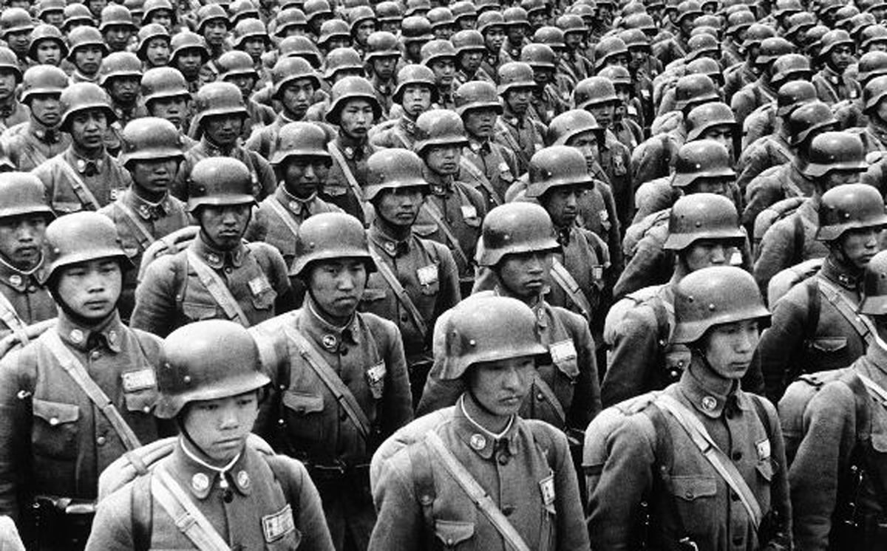
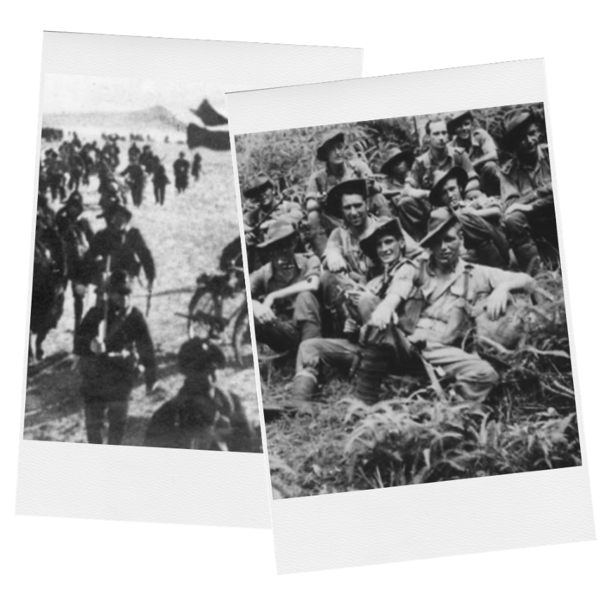
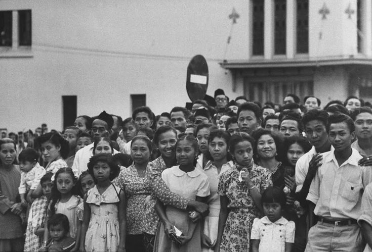
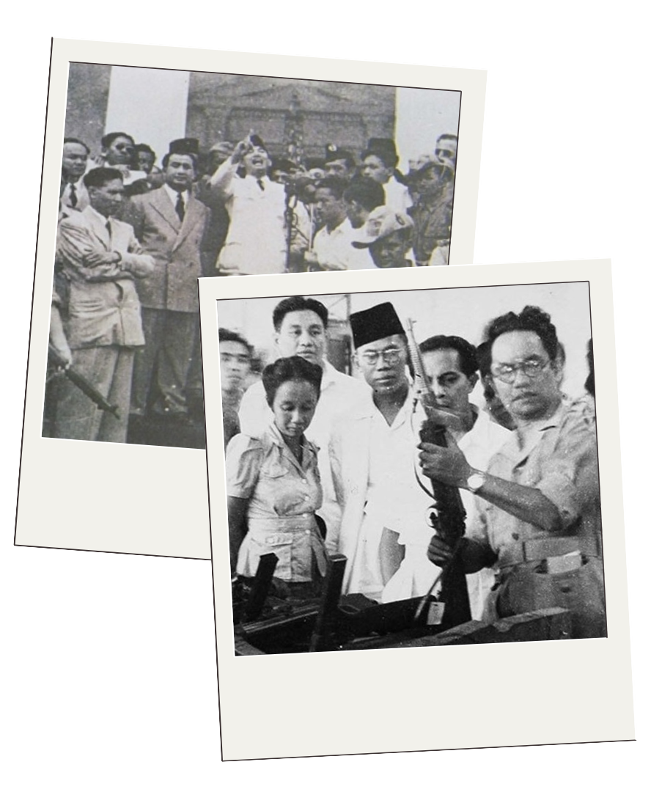

Pendudukan Jepang di Indonesia berlangsung dari Maret 1942 hingga Agustus 1945,
membawa perubahan signifikan dalam berbagai aspek kehidupan masyarakat.
Mempelajari latar belakang kedatangan Jepang, proses penyerahan Belanda, serta pembagian wilayah administrasi militer selama masa pendudukan Jepang.
Mengetahui kebijakan Jepang seperti kerja paksa (romusha) dan penyerahan bahan makanan yang mempengaruhi kehidupan rakyat.
Memahami bentuk-bentuk perlawanan rakyat serta bagaimana pendudukan Jepang mendorong semangat nasionalisme dan mempercepat kemerdekaan Indonesia.
Jepang mengincar Indonesia, seperti kebutuhan akan sumber daya alam untuk mendukung upaya perang mereka di Asia Tenggara. Pada 7 Desember 1941, Jepang menyerang pangkalan Angkatan Laut AS di Pearl Harbor, menandai dimulainya ekspansi mereka ke wilayah Asia-Pasifik.


Pendudukan Jepang di Indonesia diawali dengan pendaratan pasukan Jepang di Tarakan, Kalimantan Timur, pada 11 Januari 1942. Tarakan menjadi sasaran awal karena kekayaan sumber daya minyaknya yang sangat dibutuhkan Jepang untuk mendukung upaya perangnya di Asia Tenggara. Setelah berhasil merebut Tarakan, Jepang terus melanjutkan invasi ke wilayah-wilayah strategis lainnya seperti Balikpapan, Palembang, dan akhirnya Pulau Jawa.
Puncaknya terjadi pada 1 Maret 1942, saat pasukan Jepang mendarat di tiga titik utama di Jawa, yaitu Banten, Indramayu, dan Bojonegoro. Serangan cepat dan terkoordinasi ini memukul mundur pasukan Hindia Belanda. Akhirnya, pada 8 Maret 1942, pemerintah Hindia Belanda menyerah tanpa syarat kepada Jepang melalui penandatanganan Perjanjian Kalijati di Subang, Jawa Barat, menandai berakhirnya kekuasaan Belanda dan awal pendudukan Jepang di Indonesia.
Jepang membagi wilayah Indonesia menjadi tiga area administrasi militer:

Selama masa pendudukannya, Jepang menerapkan berbagai kebijakan yang berdampak besar terhadap kehidupan sosial dan ekonomi masyarakat Indonesia. Dengan dalih “saudara tua” dan pembebasan Asia dari penjajahan Barat, kenyataannya Jepang justru menerapkan sistem yang menindas dan mengeksploitasi rakyat.
Salah satu kebijakan yang paling menyengsarakan adalah Romusha, yaitu kerja paksa yang melibatkan ratusan ribu rakyat Indonesia, termasuk pemuda dan petani, untuk membangun infrastruktur militer seperti jalan, jembatan, rel kereta api, dan lapangan terbang. Para romusha diperlakukan sangat buruk, sering kekurangan makanan, tempat tinggal, dan perawatan kesehatan. Banyak dari mereka yang meninggal karena penyakit dan kelelahan ekstrem.
Selain itu, Jepang juga menerapkan sistem Kinrohosi, yaitu kewajiban bagi rakyat untuk menyerahkan hasil panen, bahan makanan, atau ternak kepada militer Jepang. Kebijakan ini menyebabkan rakyat kehilangan sumber pangan dan mengalami kelaparan yang meluas, terutama di daerah pedesaan. Situasi ini diperparah dengan inflasi, kelangkaan barang, serta rusaknya sistem distribusi ekonomi akibat perang.
Yang paling tragis adalah kebijakan Jugun Ianfu, di mana perempuan Indonesia—terutama dari kalangan miskin—dipaksa menjadi wanita penghibur bagi tentara Jepang di barak-barak militer. Banyak dari mereka mengalami kekerasan fisik dan psikologis yang mendalam, dan hingga kini, kasus ini masih menjadi luka sejarah yang belum sepenuhnya mendapat pengakuan atau keadilan.
Meskipun Jepang menerapkan pengawasan ketat dan tindakan represif, rakyat Indonesia tidak tinggal diam. Berbagai bentuk perlawanan muncul di berbagai daerah, baik secara terbuka maupun melalui gerakan bawah tanah. Perlawanan ini dilakukan oleh kelompok masyarakat, tokoh agama, pemuda, hingga mantan tentara KNIL yang berjuang demi harga diri dan keselamatan rakyat.
Salah satu bentuk perlawanan yang mencolok adalah Perang Dayak Desa di Kalimantan Barat pada tahun 1945. Perang ini merupakan pemberontakan terbuka oleh masyarakat Dayak terhadap kekejaman tentara Jepang, yang dipicu oleh penderitaan rakyat akibat kerja paksa, kekurangan makanan, dan kekerasan fisik yang dilakukan penjajah. Gerakan ini menunjukkan bahwa semangat perlawanan tidak pernah padam, bahkan di wilayah yang jauh dari pusat pemerintahan kolonial.
Selain perlawanan fisik, muncul pula gerakan bawah tanah yang dilakukan oleh tokoh nasionalis. Mereka menggunakan jaringan rahasia untuk menyebarkan semangat kemerdekaan, mengedukasi masyarakat, dan mempersiapkan diri menghadapi perubahan kekuasaan. Meskipun berada dalam tekanan dan ancaman dari Kempetai (polisi militer Jepang), mereka tetap bergerak demi cita-cita Indonesia merdeka.

Pendudukan Jepang di Indonesia yang dimulai pada tahun 1942 membawa dampak besar terhadap perkembangan semangat nasionalisme bangsa Indonesia. Meskipun awalnya Jepang datang dengan propaganda sebagai "saudara tua" yang akan membebaskan Asia dari penjajahan Barat, kenyataannya rakyat Indonesia tetap mengalami penderitaan, kerja paksa (romusha), dan penindasan. Namun, secara tidak langsung, situasi ini justru membangkitkan kesadaran kolektif bangsa untuk bersatu dan berjuang demi kemerdekaan. Tekanan hidup dan kekejaman Jepang menumbuhkan tekad rakyat untuk segera terbebas dari segala bentuk penjajahan.
Salah satu kebijakan Jepang yang memiliki dampak signifikan terhadap perjuangan kemerdekaan adalah pembentukan organisasi Pusat Tenaga Rakyat (Putera) pada tahun 1943. Walaupun Putera dibentuk atas inisiatif Jepang sebagai alat propaganda, para tokoh nasionalis seperti Soekarno, Hatta, Ki Hajar Dewantara, dan KH Mas Mansyur berhasil memanfaatkannya untuk menyebarkan semangat kebangsaan dan menyuarakan aspirasi kemerdekaan secara terselubung. Melalui Putera dan berbagai organisasi lain, para pemimpin bangsa membina kekuatan rakyat, memperkuat pendidikan politik, dan mempersiapkan diri menghadapi masa depan Indonesia yang merdeka.